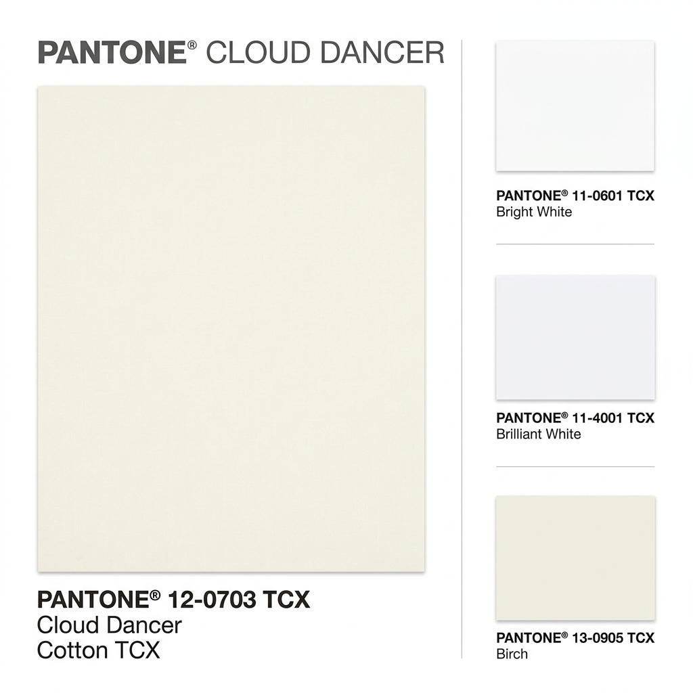

Last updated: July 14, 2026
Does Pantone's 2026 Colour of the Year Suit Your Skin Tone?
Quick answer: Pantone's 2026 Colour of the Year is Cloud Dancer, a soft, balanced white. It tends to flatter warm and neutral undertones most naturally, while very fair, cool undertones may find it slightly flattening rather than brightening — the fix isn't to skip the trend, but to style it a shade or two off pure white.

What Cloud Dancer Actually Is
Cloud Dancer (PANTONE 11-4201) is a soft, balanced white — not a stark, optically bright white — described by Pantone as having equal warm and cool undertones, positioned as a calming, understated shade for 2026.
Why "White" Isn't One Colour
This is exactly the kind of colour where undertone science matters most. A pure, cool-leaning white can look crisp on cool undertones but harsh under the chin on warm ones; a soft, warm-leaning white like Cloud Dancer tends to flip that — flattering warm skin while occasionally flattening very fair, cool skin by removing contrast rather than adding brightness.
By Undertone
Warm undertone: Cloud Dancer works well close to the face — it reads as soft and glowing rather than stark.
Cool undertone: Cloud Dancer can slightly flatten a fair-cool complexion up close; it works better as a bottom, bag, or layering piece than a top worn right against the face.
Neutral undertone: Cloud Dancer generally works well either way, since a "balanced" white pairs naturally with a balanced undertone.
How to Wear It If It's Not Your Best White
You don't have to skip a trend just because it's not your ideal shade — add contrast back in with makeup (a warmer blush or bolder lip), layer it under a structured jacket in your best colour, or wear it as a bottom rather than a top.
FAQ
Is Cloud Dancer only relevant for home decor and branding?
No — Pantone's Colour of the Year influences fashion collections too, and it's already showing up in ready-to-wear and festive-adjacent pieces this year.
Can I still wear a trending colour if it doesn't technically suit me?
Yes — styling choices (placement, accessories, makeup) can offset an undertone mismatch; the goal isn't to avoid trends, just to wear them intentionally.
What's the difference between Cloud Dancer and a plain stark white?
Cloud Dancer has a soft warm-cool balance built in, making it gentler and slightly warmer than an optically bright, cool-leaning white — which is why it tends to suit a slightly wider range of undertones than stark white does.
Curious how this year's trending shade actually reads against your undertone? [Find out with Colourity →](https://colourity.com)